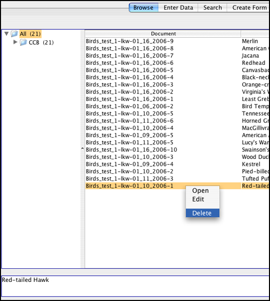
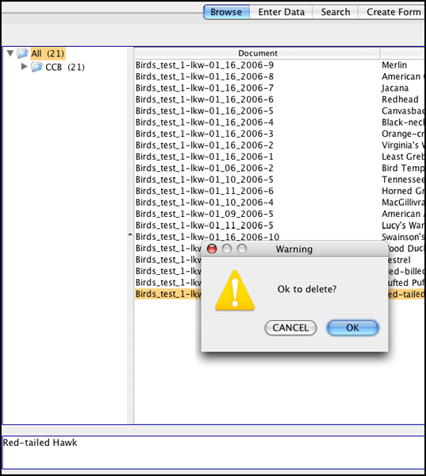

In Browse mode, deleting forms is possible. For this to be accomplished, the name of the form to be deleted has to be showing in the right pane. Right click on the form you wish to delete. Select the delete option from the list that appears.
A small verification dialog box will appear asking if it is OK to delete the file. Click the "OK" button to delete the form.
| Previous page | Return to top of page | Next page |